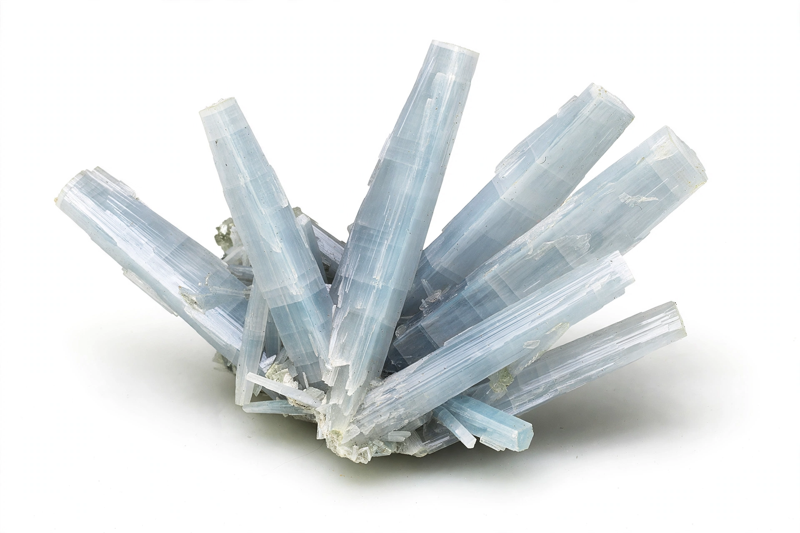

| Anhydrite | |
|---|---|
 Anhydrite from Chihuahua, Mexico | |
| Category | Sulfate mineral |
| Formula | CaSO4 |
| Crystal system | Orthorhombic |
| Colour | Colourless to pale blue or violet; white, pink, grey |
| Mohs hardness | 3.5 |
| Specific gravity | 2.97 |
Anhydrite, or anhydrous calcium sulfate, is a mineral with the chemical formula CaSO4. It is in the orthorhombic crystal system, with perfect cleavage in three directions intersecting at right angles. The name derives from the Greek anhydros, "without water," distinguishing it from gypsum, the hydrous calcium sulfate (CaSO4·2H2O).
Anhydrite is a common evaporite mineral, formed where seawater or saline lake water evaporates in restricted basins, typically in association with halite, gypsum, and dolomite in sedimentary sequences. It forms the caprock of many salt domes, where groundwater converts it at the surface to gypsum with a substantial increase in volume. It also occurs in hydrothermal veins and in some igneous rocks in small amounts. Notable localities include the Zechstein deposits of Germany and Poland, the Gulf Coast salt domes of the United States, and Chihuahua in Mexico, which produces prized blue crystals.
Anhydrite is colourless to pale blue or violet and has a hardness of 3.5 on the Mohs scale. On exposure to water it slowly absorbs moisture and converts to gypsum, swelling in the process—a behaviour that can damage tunnels and foundations driven through anhydrite-bearing strata. The reverse dehydration of gypsum to anhydrite occurs at temperatures above roughly 40–60 °C in the presence of saline waters.
Anhydrite is used in the manufacture of cement and plaster, as a source of sulfur and sulfuric acid in some processes, as a soil conditioner supplying calcium and sulfur, and as a filler in paints and plastics. Finely carved bluish anhydrite, sold as "angelite," is used as an ornamental stone.
Gypsum · Evaporite · Zechstein · Sabkha · Sedimentary rock